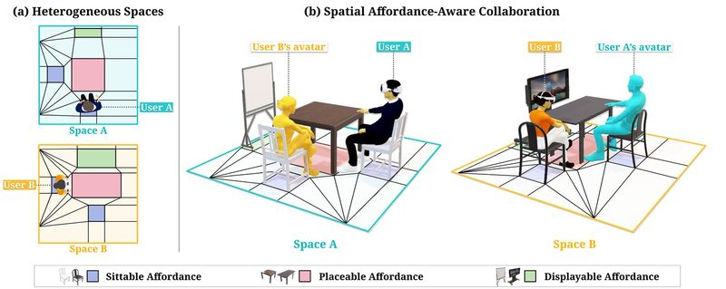
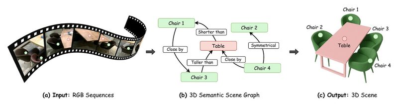
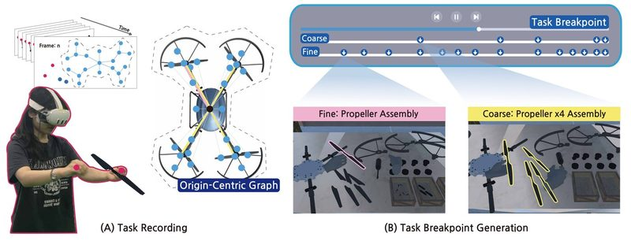
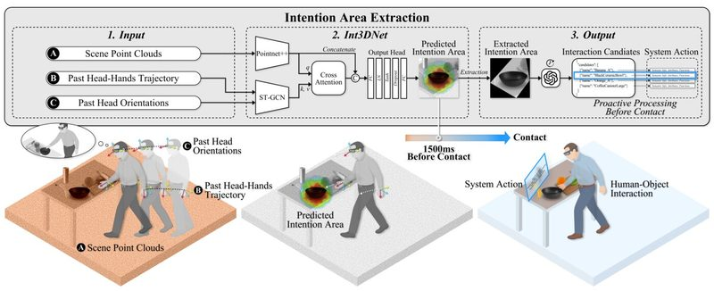
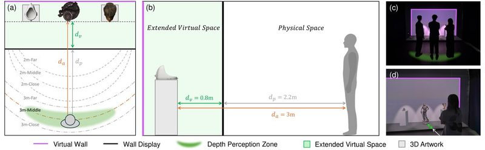
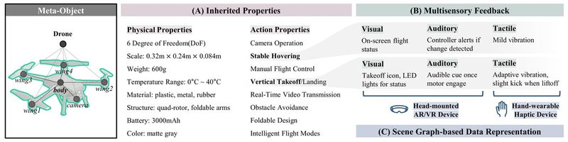
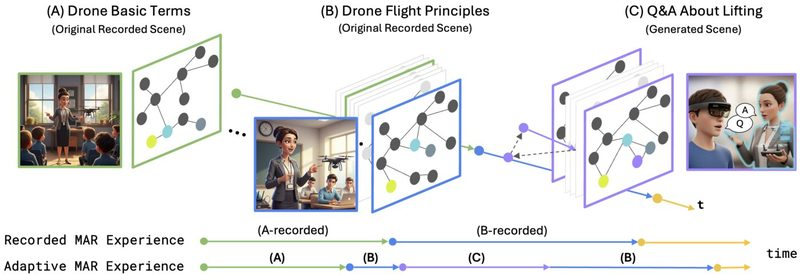
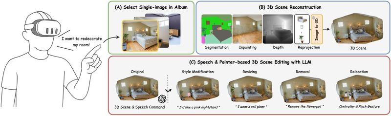
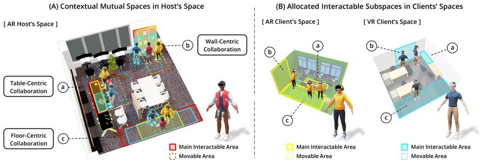

Refereed publications from IXRI Lab members · Google Scholar
2026

Spatial Affordance-Aware Affine Transformation Between Heterogeneous Spaces for Mixed Reality Remote CollaborationIEEE Transactions on Visualization and Computer Graphics (TVCG) 2026Seonji Kim, Dooyoung Kim, Selin Choi, and Woontack Woo

SceneLinker: Compositional 3D Scene Generation via Semantic Scene Graph from RGB SequencesIEEE Transactions on Visualization and Computer Graphics (TVCG) 2026Seok-Young Kim, Dooyoung Kim, Woojin Choi, Hail Song, Suji Kang, and Woontack Woo

Task Breakpoint Generation using Origin-Centric Graph in Virtual Reality Recordings for Adaptive PlaybackIEEE Transactions on Visualization and Computer Graphics (TVCG) 2026Selin Choi, Dooyoung Kim, Taewook Ha, Seonji Kim, and Woontack Woo

Int3DNet: Scene–Motion Cross Attention Network for 3D Intention Prediction in Mixed RealityIEEE Transactions on Visualization and Computer Graphics (TVCG) 2026Taewook Ha, Woojin Cho, Dooyoung Kim, and Woontack Woo
2025

Viewpoint-Tolerant Depth Perception for Shared Extended Space Experience on Wall-Sized DisplayIEEE TVCG 2025 · Best Paper Award @ ISMAR 2025 (Top 1%)Dooyoung Kim, Jinseok Hong, Heejeong Ko, and Woontack Woo
Visuo-Tactile Feedback with Hand Outline Styles for Modulating Affective Roughness PerceptionIEEE TVCG 2025 · Best Paper Award @ ISMAR 2025 (Top 1%)Minju Baeck, Yoonseok Shin, Dooyoung Kim, Hyunjin Lee, Sang Ho Yoon, and Woontack Woo

Meta-Objects: Interactive and Multisensory Virtual Objects Learned From the Real World for Use in Augmented RealityIEEE Computer Graphics and Applications 2025Dooyoung Kim, Taewook Ha, Jinseok Hong, Seonji Kim, Selin Choi, Heejeong Ko, and Woontack Woo

Spatio-Temporal Mixed and Augmented Reality Experience Description for Interactive PlaybackIEEE ISMAR Adjunct 2025Dooyoung Kim and Woontack Woo

RealityCrafter: User-guided Editable 3D Scene Generation from a Single Image in Mixed RealityACM UIST Adjunct 2025Seokyoung Kim, Dooyoung Kim, Taejun Son, and Woontack Woo
An Overview of the 1st International Workshop on Spatial Memory in XR (XRMemory)IEEE VRW 2025Dooyoung Kim, Kangsoo Kim, Claudio T Silva, Qi Sun, Dishita Turakhia, Zhu Wang, Keru Wang, Ken Perlin, Steven Feiner, Woontack Woo
Human-Scene Interaction Data Generation with Virtual Environment using User-Centric Scene GraphIEEE VRW 2025Taewook Ha, Selin Choi, Seonji Kim, Dooyoung Kim, and Woontack Woo
2024

Spatial Affordance-aware Interactable Subspace Allocation for Mixed Reality TelepresenceIEEE ISMAR 2024 · Best Paper Award (Top 1%)Dooyoung Kim, Seonji Kim, Selin Choi, and Woontack Woo
Object cluster registration of dissimilar rooms using geometric spatial affordance graph to generate shared virtual spacesIEEE VR 2024Seonji Kim, Dooyoung Kim, Jae-eun Shin, and Woontack Woo
2023
The effects of spatial configuration on relative translation gain thresholds in redirected walkingSpringer Virtual Reality 2023 · Best Presentation Award @ APMAR 2022 (1st Prize)Dooyoung Kim, Seonji Kim, Jae-eun Shin, Boram Yoon, Jinwook Kim, Jeongmi Lee, and Woontack Woo
Effects of avatar transparency on social presence in task-centric mixed reality remote collaborationIEEE TVCG 2023Boram Yoon, Jae-eun Shin, Hyung-il Kim, Seoyoung Oh, Dooyoung Kim, and Woontack Woo
Exploration of the virtual reality teleportation methods using hand-tracking, eye-tracking, and EEGInternational Journal of Human-Computer Interaction 2023Jinwook Kim, Hyunyoung Jang, Dooyoung Kim, and Jeongmi Lee
Mutual space generation with redirected walking for asymmetric remote collaborationIEEE VRW 2023Dooyoung Kim
Holobot: Hologram based extended reality telepresence robotACM/IEEE HRI Companion 2023Jinwook Kim, Dooyoung Kim, Bowon Kim, Hyunchul Kim, and Jeongmi Lee
2022
The effects of spatial complexity on narrative experience in space-adaptive AR storytellingIEEE TVCG 2022Jae-eun Shin, Boram Yoon, Dooyoung Kim, and Woontack Woo
The effects of device and spatial layout on social presence during a dynamic remote collaboration task in mixed realityIEEE ISMAR 2022Jae-eun Shin, Boram Yoon, Dooyoung Kim, Hyung-il Kim, and Woontack Woo
Effects of Virtual Room Size and Objects on Relative Translation Gain Thresholds in Redirected WalkingIEEE VR 2022Dooyoung Kim, Jinwook Kim, Jae-eun Shin, Boram Yoon, Jeongmi Lee, and Woontack Woo
2021
A user-oriented approach to space-adaptive augmentation: The effects of spatial affordance on narrative experience in an augmented reality detective gameACM CHI 2021 · Honorable Mention Award (Top 5%)Jae-eun Shin, Boram Yoon, Dooyoung Kim, Woontack Woo
Adjusting Relative Translation Gains According to Space Size in Redirected Walking for Mixed Reality Mutual Space GenerationIEEE VR 2021Dooyoung Kim, Jae-eun Shin, Jeongmi Lee, and Woontack Woo